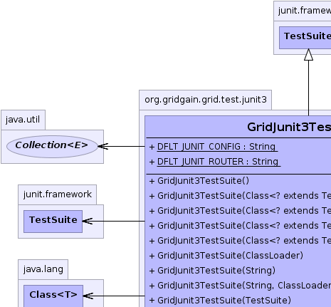
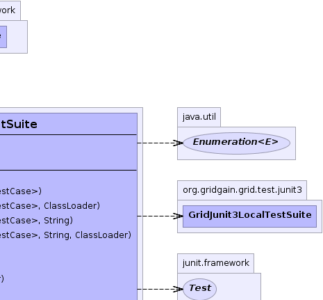
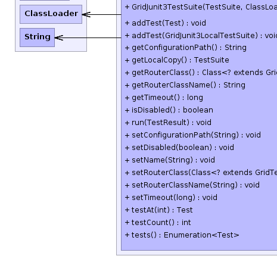
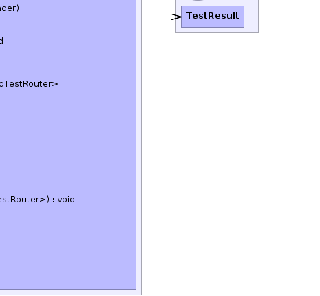

junit.framework.TestSuite
org.gridgain.grid.test.junit3.GridJunit3TestSuite
junit.framework.TestSuite
org.gridgain.grid.test.junit3.GridJunit3TestSuite
|
GridGain™ 3.5.0c
Community Edition |
|||||||||
| PREV CLASS NEXT CLASS | FRAMES NO FRAMES | |||||||||
| SUMMARY: NESTED | FIELD | CONSTR | METHOD | DETAIL: FIELD | CONSTR | METHOD | |||||||||
java.lang.Object
public class GridJunit3TestSuite
Test suite for distributing JUnit3 tests. Simply add tests to this suite just like you would for regular JUnit3 suites, and these tests will be executed in parallel on the grid. Note that if there are no other grid nodes, this suite will still ensure parallel test execution within single JVM.
Below is an example of distributed JUnit3 test suite:
public class GridJunit3ExampleTestSuite {
// Standard JUnit3 static suite method.
public static TestSuite suite() {
TestSuite suite = new GridJunit3TestSuite("Example Grid Test Suite");
// Add tests.
suite.addTestSuite(TestA.class);
suite.addTestSuite(TestB.class);
suite.addTestSuite(TestC.class);
return suite;
}
}
If you have four tests A, B, C, and D, and if you need to run A and B sequentially, then you
should create a nested test suite with test A and B as follows:
public class GridJunit3ExampleTestSuite {
// Standard JUnit3 static suite method.
public static TestSuite suite() {
TestSuite suite = new GridJunit3TestSuite("Example Grid Test Suite");
// Nested test suite to run tests A and B sequentially.
TestSuite nested = new TestSuite("Example Nested Sequential Suite");
nested.addTestSuite(TestA.class);
nested.addTestSuite(TestB.class);
// Add tests A and B.
suite.addTest(nested);
// Add other tests.
suite.addTestSuite(TestC.class);
return suite;
}
}
Note that you can also grid-enable existing JUnit3 tests using @GridifyTest
annotation which you can attach to your suite() methods of existing test suite. Refer
to @GridifyTest documentation for more information.
Also note that some tests can only be executed locally mostly due to some environment issues. However
they still can benefit from parallel execution with other tests. GridGain supports it via
GridJunit3LocalTestSuite suites that can be added to GridJunit3TestSuite. Refer
to GridJunit3LocalTestSuite documentation for more information.
System.out or System.err
is preserved. GridGain will accumulate all logging that is done on remote nodes, send them back
to originating node and associate all log statements with their corresponding tests. This way,
for example, if you are running tests from and IDEA or Eclipse (or any other IDE) you would still
see the logs as if it was a local run. However, since remote nodes keep all log statements done within
a single individual test case in memory, you must make sure that enough memory is allocated
on every node and that individual test cases do not spit out gigabytes of log statements.
Also note, that logs will be sent back to originating node upon completion of every test,
so don't be alarmed if you don't see any log statements for a while and then all of them
appear at once.
GridGain achieves such log transparency via reassigning System.out or System.err to
internal PrintStream implementation. However, when using Log4J (or any other
logging framework) within your tests you must make sure that it is configured with
ConsoleAppender and that ConsoleAppender.setFollow(boolean) attribute is set to
true. Logging to files is not supported yet and is planned for next point release.
GridJunit3TestSuite instances can be nested within each other as deep as needed.
However all nested distributed test suites will be treated just like regular JUnit test suites,
and not as distributed test suites. This approach becomes convenient when you have several
distributed test suites that you would like to be able to execute separately in distributed
fashion, but at the same time you would like to be able to execute them as a part of larger
distributed suites.
GRIDGAIN_HOME/bin/ggjunit.{sh|bat} script, which will
start default configuration. If configuration other than default is required, then
use regular GRIDGAIN_HOME/bin/ggstart.{sh|bat} script and pass your own
Spring XML configuration file as a parameter to the script.
You can use the following configuration parameters to configure distributed test suite
locally. Note that many parameters can be overridden by setting corresponding VM parameters
defined in GridTestVmParameters at VM startup.
| GridConfiguration Method | Default Value | Description |
|---|---|---|
setDisabled(boolean) |
false |
If true then GridGain will be turned off and suite will run locally.
This value can be overridden by setting GridTestVmParameters.GRIDGAIN_DISABLED VM
parameter to true. This parameter comes handy when you would like to
turn off GridGain without changing the actual code.
|
setConfigurationPath(String) |
DFLT_JUNIT_CONFIG |
Optional path to GridGain Spring XML configuration file for running JUnit tests. This
property can be overridden by setting GridTestVmParameters.GRIDGAIN_CONFIG VM
parameter. Note that the value can be either absolute value or relative to
${GRIDGAIN_HOME} installation folder.
|
setRouterClassName(String) |
DFLT_JUNIT_ROUTER |
Optional name of test router class that implements GridTestRouter interface.
If not provided, then tests will be routed in round-robin fashion using default
GridTestRouterAdapter. The value of this parameter can be overridden by setting
GridTestVmParameters.GRIDGAIN_TEST_ROUTER VM parameter to the name of your
own customer router class.
|
setRouterClass(Class) |
null |
Same as setRouterClassName(String), but sets the
actual class instead of the name.
|
setTimeout(long) |
0 which means that tests will never timeout. |
Maximum timeout value in milliseconds after which test suite will return without
waiting for the remaining tests to complete. This value can be overridden by setting
GridTestVmParameters.GRIDGAIN_TEST_TIMEOUT VM parameter to the timeout value
for the tests.
|
| Wiki | |
| Forum |
|  |  |
|  |  |
| Field Summary | |
|---|---|
static String |
DFLT_JUNIT_CONFIG
Default GridGain configuration file for JUnits (value is config/junit/junit-spring.xml). |
static String |
DFLT_JUNIT_ROUTER
Default JUnit test router (value is GridTestRouterAdapter.class.getName()). |
| Constructor Summary | |
|---|---|
GridJunit3TestSuite()
Empty test suite. |
|
GridJunit3TestSuite(Class<? extends junit.framework.TestCase> cls)
Test suite for one class. |
|
GridJunit3TestSuite(Class<? extends junit.framework.TestCase> cls,
ClassLoader clsLdr)
Test suite for one class. |
|
GridJunit3TestSuite(Class<? extends junit.framework.TestCase> cls,
String name)
Test suite for a given test class with specified test name. |
|
GridJunit3TestSuite(Class<? extends junit.framework.TestCase> cls,
String name,
ClassLoader clsLdr)
Test suite for a given test class with specified test name. |
|
GridJunit3TestSuite(ClassLoader clsLdr)
Empty test suite with given class loader. |
|
GridJunit3TestSuite(String name)
|
|
GridJunit3TestSuite(String name,
ClassLoader clsLdr)
|
|
GridJunit3TestSuite(junit.framework.TestSuite suite)
Copies non-distributed test suite into distributed one. |
|
GridJunit3TestSuite(junit.framework.TestSuite suite,
ClassLoader clsLdr)
Copies non-distributed test suite into distributed one. |
|
| Method Summary | |
|---|---|
void |
addTest(GridJunit3LocalTestSuite localSuite)
The added suite will be always executed locally, but in parallel with other locally or remotely running tests. |
void |
addTest(junit.framework.Test test)
Adds a test to be executed on the grid. |
String |
getConfigurationPath()
Gets path to GridGain configuration file. |
junit.framework.TestSuite |
getLocalCopy()
Gets identical suite for local (non-distributed) execution. |
Class<? extends GridTestRouter> |
getRouterClass()
Gets router class used for test routing. |
String |
getRouterClassName()
Gets JUnit test router class name. |
long |
getTimeout()
Gets timeout for running distributed test suite. |
boolean |
isDisabled()
Gets flag indicating whether GridGain should be enabled or not. |
void |
run(junit.framework.TestResult result)
Runs all tests belonging to this test suite on the grid. |
void |
setConfigurationPath(String cfgPath)
Sets path to GridGain configuration file. |
void |
setDisabled(boolean disabled)
Disables GridGain. |
void |
setName(String name)
|
void |
setRouterClass(Class<? extends GridTestRouter> routerCls)
Sets router class. |
void |
setRouterClassName(String routerClsName)
Sets name of class for routing JUnit tests. |
void |
setTimeout(long timeout)
Sets timeout for running distributed test suite. |
junit.framework.Test |
testAt(int index)
|
int |
testCount()
|
Enumeration<junit.framework.Test> |
tests()
|
| Methods inherited from class junit.framework.TestSuite |
|---|
addTestSuite, countTestCases, createTest, getName, getTestConstructor, runTest, toString, warning |
| Methods inherited from class java.lang.Object |
|---|
clone, equals, finalize, getClass, hashCode, notify, notifyAll, wait, wait, wait |
| Field Detail |
|---|
public static final String DFLT_JUNIT_CONFIG
config/junit/junit-spring.xml).
public static final String DFLT_JUNIT_ROUTER
GridTestRouterAdapter.class.getName()).
| Constructor Detail |
|---|
public GridJunit3TestSuite()
public GridJunit3TestSuite(String name)
name - Test suite name.public GridJunit3TestSuite(Class<? extends junit.framework.TestCase> cls)
cls - Class for test suite.public GridJunit3TestSuite(Class<? extends junit.framework.TestCase> cls, String name)
cls - Test class.name - Test name.public GridJunit3TestSuite(junit.framework.TestSuite suite)
suite - Test suite to copy.public GridJunit3TestSuite(ClassLoader clsLdr)
clsLdr - Tests class loader.
public GridJunit3TestSuite(String name,
ClassLoader clsLdr)
name - Test suite name.clsLdr - Tests class loader.public GridJunit3TestSuite(Class<? extends junit.framework.TestCase> cls, ClassLoader clsLdr)
cls - Class for test suite.clsLdr - Tests class loader.public GridJunit3TestSuite(Class<? extends junit.framework.TestCase> cls, String name, ClassLoader clsLdr)
cls - Test class.name - Test name.clsLdr - Tests class loader.
public GridJunit3TestSuite(junit.framework.TestSuite suite,
ClassLoader clsLdr)
suite - Test suite to copy.clsLdr - Tests class loader.| Method Detail |
|---|
public void setConfigurationPath(String cfgPath)
{GRIDGAIN_HOME}/config/junit/junit-spring.xml is used.
cfgPath - Path to GridGain configuration file.public String getConfigurationPath()
{GRIDGAIN_HOME}/config/junit/junit-spring.xml is used.
public void setDisabled(boolean disabled)
true then this suite will execute locally
as if GridGain was not in a picture at all.
disabled - If set to true then this suite will execute locally
as if GridGain was not in a picture at all.public boolean isDisabled()
true then this suite will execute locally as if GridGain was not
in a picture at all.
true then this suite will execute locally as if GridGain was not
in a picture at all.public void setRouterClassName(String routerClsName)
GridJunit3TestSuite.DFLT_JUNIT_ROUTER
class name is used.
routerClsName - Junit test router class name.public String getRouterClassName()
public void setRouterClass(Class<? extends GridTestRouter> routerCls)
GridTestRouterAdapter is used.
routerCls - Router class to use for test routing.public Class<? extends GridTestRouter> getRouterClass()
public junit.framework.TestSuite getLocalCopy()
public void setName(String name)
setName in class junit.framework.TestSuitepublic long getTimeout()
public void setTimeout(long timeout)
timeout - Timeout for tests.public junit.framework.Test testAt(int index)
testAt in class junit.framework.TestSuitepublic int testCount()
testCount in class junit.framework.TestSuitepublic Enumeration<junit.framework.Test> tests()
tests in class junit.framework.TestSuitepublic void addTest(GridJunit3LocalTestSuite localSuite)
Note, that local suites will be executed on local node even if grid topology only allows remote nodes.
localSuite - Test to execute locally in parallel with other local or
distributed tests.public void addTest(junit.framework.Test test)
addTest in class junit.framework.TestSuitetest - Test to add.public void run(junit.framework.TestResult result)
run in interface junit.framework.Testrun in class junit.framework.TestSuiteresult - Test result collector.
|
GridGain™ 3.5.0c
Community Edition |
|||||||||
| PREV CLASS NEXT CLASS | FRAMES NO FRAMES | |||||||||
| SUMMARY: NESTED | FIELD | CONSTR | METHOD | DETAIL: FIELD | CONSTR | METHOD | |||||||||
|
GridGain - High Performance Cloud Computing
|
|

|
|